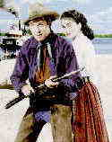

BEND OF THE RIVER /B, B FAR COUNTRY /B-, C+ Combine the big screen vistas of the West with the lean storytelling style of director Anthony Mann and you have an ideal combo. MCA has packaged two of the Mann directed Westerns together in a gatefold jacket as part of their Encore Collection. Bend of the River is the better of these two films, which both star
James Stewart as a dusty drifter looking for a place to rest his weathered hat. Stewart is
Glyn McClyntock leading a wagon train into the north country of Oregon's mountains.
Stewart is trying to escape a questionable past as a border raider during the waning years
of the Civil War. Scouting the trails ahead he saves another drifter Cole Garret, played
by Arthur Kennedy, from being the center piece at a necktie party. This sets up the chief
conflict of the film, an eventual double-cross by the practical Garret.  There is excellent chemistry between Stewart and Kennedy. Each understands the other all too well. Stewart knows he easily could have taken the same path as Kennedy. Stewart remembers the darker aspects of his own nature and it these he is trying to escape, while Kennedy is a constant reminder of that past. While Stewart manages to get the wagon train to its promised land, the supplies purchased that have promised for delivery to the settlers before the Winter freeze closes the pass to town do not arrive on schedule. It's left to Stewart to save the day by commandeering the supplies. The ultimate confrontation between Stewart and Kennedy is played out and Stewart can look ahead to a future with a receding past. The Far Country is by far the darker of the two films. This time Stewart is a loner who only wants to take care of himself. It's an interesting role for Stewart and he brings it off with his usual extraordinary skill. Even in the end the purity of motive for Stewart's actions is questionable. Set again in the spectacular vistas of the great Northwest, Stewart and sidekick Walter Brennan arrive in Skagway with a herd of cattle hoping to start a new life for themselves. When Stewart drives the cattle through the streets and upsets a hanging in progress, the law, in the person of John McIntire, corrals Stewart for disturbing the peace and confiscates the herd of cattle as a fine. Stewart and Brennan are then seduced by mining fever and when those corrupt elements, led by McIntire, begin gobbling up all the miner's claims, Stewart is the only one strong enough to stand up to them. It takes a lot before he takes up the fight. Walter Brennan is a joy to watch. He adds enormous warmth to this rather cynical story. It is fitting that he is ultimately the cause of action for Stewart's strapping on the guns with deadly resolve. Along with Brennan's support, Director Mann has a stock cast of supporting players that appear in both films and adds a stability to these Western treats. The colors on Bend of the River are very lively ,and the image is consistently enjoyable. The Far Country is somewhat less vibrant and there is more grain evident in the transfer. Both films are delivered with crisp resolution and little evidence of film age. The mono sound is serviceable. This is a delicious double feature and a must for devotees of the Western. Now, let's hope that MGM and Columbia will see fit to release the other great Mann/Stewart Western collaborations, The Naked Spur and The Man From Laramie. Winchester '73, the first of the Westerns made by Mann starring Stewart was released a number of years ago by MCA, including audio commentary by James Stewart. If you can find a copy of this, pull out the six shooter and acquire it. |